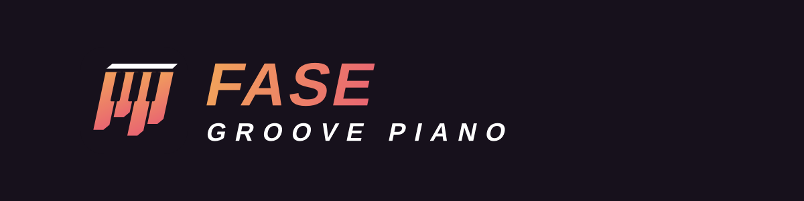
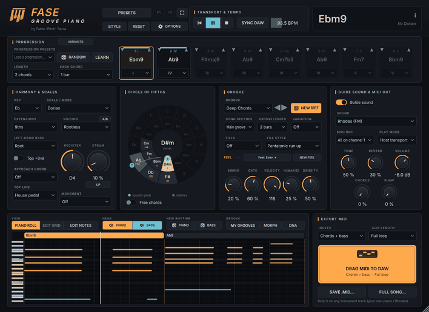

Funky piano grooves for soulful, deep & jackin' house, ready to drag into your DAW.
Giri di piano funky per soulful, deep e jackin' house, pronti da trascinare nella tua DAW.

13 scales, 9ths, 11ths, 6/9, sus and gospel dominants, voiced like a real pianist.
13 scale, none, undicesime, 6/9, sus e dominanti gospel, con voicing da pianista vero.
Soulful, deep, gospel, jackin', garage, afro, disco, '90s piano, neo soul, chill, dance stabs.
Soulful, deep, gospel, jackin', garage, afro, disco, piano anni '90, neo soul, chill, stab dance.
Pick a genre and get progression, voicing, groove, feel and sound together.
Scegli un genere e ottieni insieme progressione, voicing, groove, feel e suono.
Drag the chords around and see in colour how well they sound together.
Trascina gli accordi e vedi a colori quanto suonano bene insieme.
Play chords on your MIDI keyboard and they become the progression.
Suona gli accordi sulla tastiera MIDI e diventano la progressione.
Drag the clip into your DAW, or save every part (chords, bass, whole song) at once.
Trascina la clip nella DAW, o salva tutte le parti (accordi, basso, brano intero) in un colpo.
VST3, AU and Standalone for Windows, macOS and Linux. Free under the GNU AGPL v3. If you like it, you can support it:
VST3, AU e Standalone per Windows, macOS e Linux. Gratis con licenza GNU AGPL v3. Se ti piace, puoi sostenerlo: